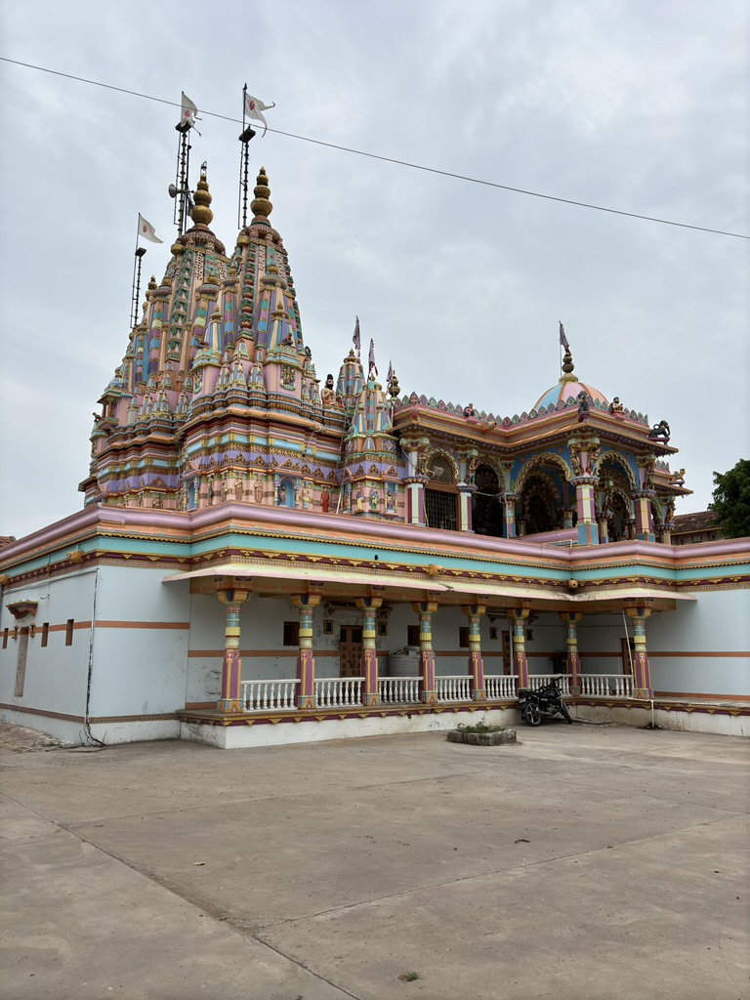

About Muli
The Muli Swaminarayan Temple and the Madhavrayji Temple are two significant religious landmarks located in Muli, Surendranagar, Gujarat. The Muli Swaminarayan Temple, established by Lord Swaminarayan in 1822, is an important site of worship for followers of the Swaminarayan faith, with Lord Harikrishna Maharaj as the central deity. Its grand architecture and spiritual significance attract many devotees.
Top Attractions
- Swaminarayan Temple: The Muli Swaminarayan Temple is a prominent religious site located in the Muli village of Surendranagar district, Gujarat. Established by Lord Swaminarayan in 1822, this temple belongs to the Swaminarayan Sampraday’s Vadtal Gadi.
- Madhavrayji Temple: The Madhavrayji Temple in Muli is dedicated to Lord Krishna, worshipped here as Madhavrayji. This ancient temple is known for its serene ambiance and classic architecture that reflects the rich heritage of the region.
Gallery
